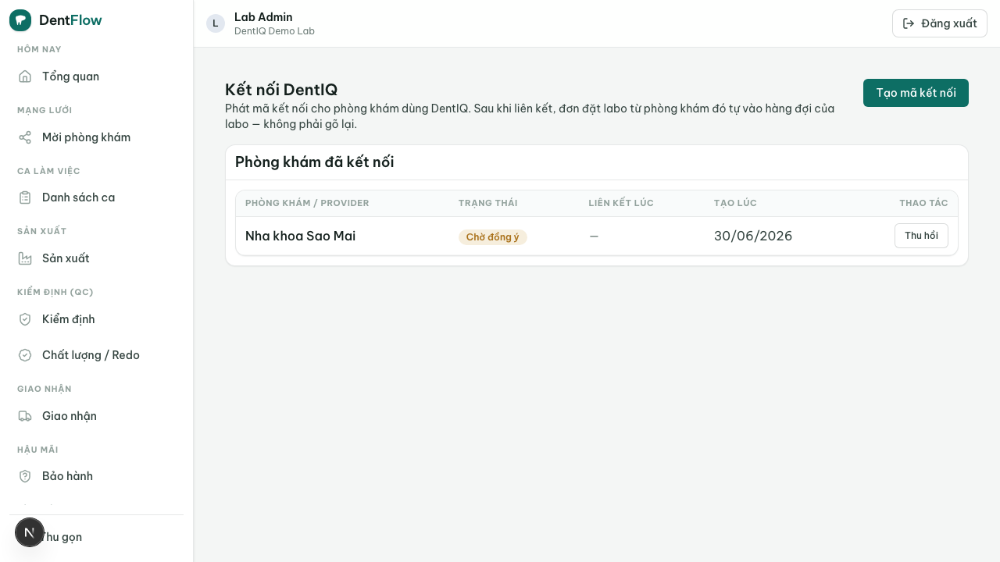

Kết nối DentIQ
Khi phòng khám dùng DentIQ (PMS), work order không cần gõ tay ở hai nơi. Một cái bắt tay đồng thuận là đủ để hai hệ thống tự đồng bộ một case.
Luồng này thiết lập (và gỡ) kết nối có đồng thuận giữa một labo DentIQ Lab và một phòng khám đang dùng DentIQ. Đây là vòng đời của một cạnh kết nối (lab link): lab phát mã → clinic đồng ý → linked → từ đó tạo đơn là tự đồng bộ 2 chiều (work order sync), gỡ bất cứ lúc nào mà không mất dữ liệu.

linked / tạm dừng / đã gỡ) và nút phát mã / gỡ.Vấn đề: gõ tay hai nơi
DentIQ (phía phòng khám) đã có phiếu lab work order: phòng khám tạo phiếu từ treatment plan, chọn "nhà cung cấp lab" — nhưng nhà cung cấp đó chỉ là một dòng dữ liệu, DentIQ không có labo thật ở đầu bên kia. Kết quả: phòng khám đoán trạng thái nhận/hoàn tất, rồi gõ lại đơn vào Zalo để đơn thực sự tới labo → gõ hai lần, sai lệch. DentIQ Lab chính là đầu bên kia còn thiếu. Kết nối hai hệ thống xoá được double-entry.
Một case, hai projection
Một case labo vật lý là một thứ duy nhất với hai bên sở hữu hai mặt khác nhau — không bên nào copy dữ liệu của bên kia, mỗi bên là một projection của case chung:
| Mặt dữ liệu | Bên sở hữu | Ghi chú |
|---|---|---|
| Snapshot lâm sàng (bệnh nhân, răng, treatment plan, Rx) | DentIQ | DentIQ đã snapshot bất biến sẵn |
| Vòng đời sản xuất (tiếp nhận → sản xuất → QC → giao → bảo hành) | DentIQ Lab | Labo vận hành ở đây |
| Số phiếu (document numbering) | DentIQ | DentIQ Lab hiển thị như external ref |
Hai bên liên kết bằng một external ref id. DentIQ giữ góc nhìn thô (không cần chi tiết milling/sinter); DentIQ Lab giữ các trạng thái sản xuất chi tiết và map ngược về trạng thái thô của DentIQ, để phòng khám thấy trạng thái thật thay vì đoán.
Vòng đời cạnh kết nối
Kết nối là đồng thuận hai chiều, gỡ được: lab phát, clinic đồng ý — không bên nào tự kết nối bên kia; cả hai phía gỡ được bất cứ lúc nào.
- Lab phát mã. Labo sinh một mã kết nối / QR ngắn hạn, dùng-một-lần (cạnh:
unlinked → code_issued). - Clinic đồng ý. Admin phòng khám dán mã trên DentIQ → handshake xác thực hai phía → lập secret webhook (cạnh:
code_issued → linked). Mã hết hạn trước khi đồng ý →expired. - Sync chạy. Từ
linked, DentIQ gửi đơn lab → đẩy sang DentIQ Lab thành một work ordersubmitted; trạng thái sản xuất map ngược về DentIQ. - Tạm dừng / gỡ. Webhook lỗi quá ngưỡng / xoay secret →
suspended(đơn xếp hàng, không mất). Bên nào cũng gỡ được →revoked. Muốn kết nối lại → lab phát mã mới.
Cộng thêm, không hồi quy
Sync là tùy chọn, không bao giờ bắt buộc. Phòng khám DentIQ chưa kết nối vận hành y hệt DentIQ hôm nay (trạng thái thủ công); labo không dùng DentIQ vẫn chạy standalone đầy đủ. Handshake an toàn: mã ngắn hạn + dùng-một-lần, cạnh linked dùng secret xoay được, payload webhook được ký và verify.
revoked / suspended / expired không xoá case đã sync. Case đang chạy giữ nguyên dữ liệu, phía clinic giữ lab work order của nó, hai bên rớt về cập nhật thủ công — không hồi quy. Chi tiết transport (webhook / idempotency / bảng map trạng thái) là phần kỹ thuật của tích hợp DentIQ ↔ DentIQ Lab.